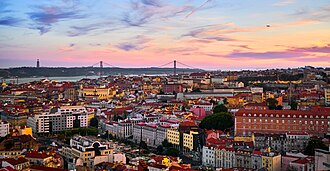
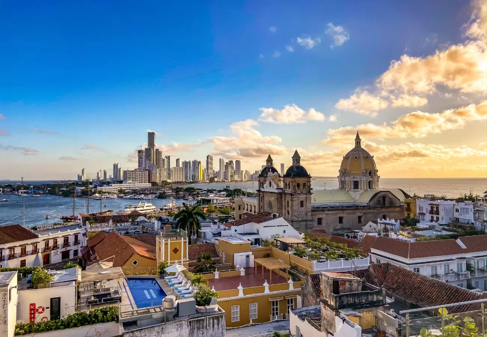
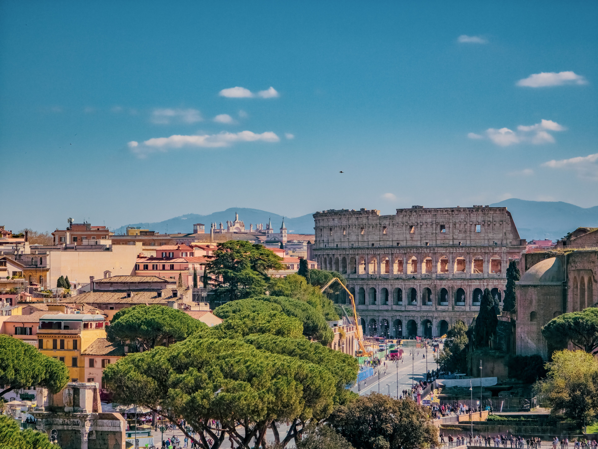
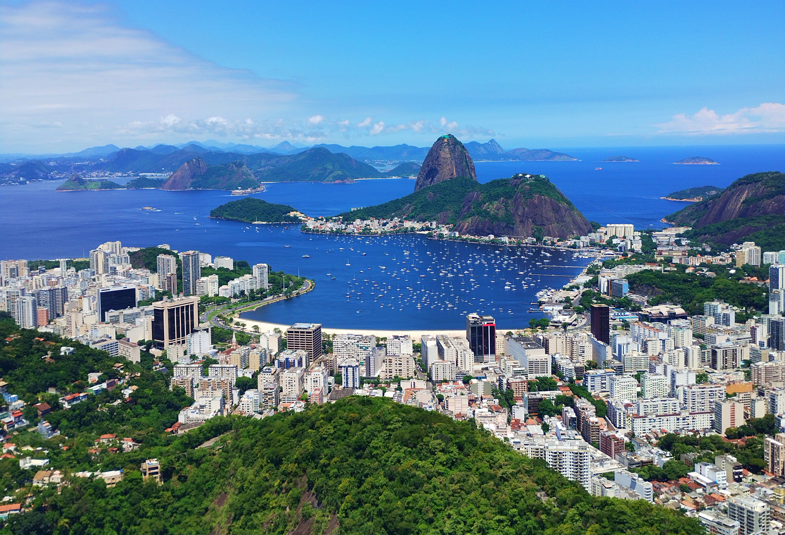

Lisboa, Portugal

Cidade histórica com bondes amarelos, miradouros e pastéis de nata em cada esquina.

Cidade histórica com bondes amarelos, miradouros e pastéis de nata em cada esquina.
Templos milenares, jardins de bambu e a tradição do chá em meio à cidade moderna.

Centro histórico colorido às margens do Caribe, cheio de música e boa comida.
Museus, cafés e avenidas elegantes, com a Torre Eiffel aparecendo a cada esquina.

Ruínas milenares, praças cheias de vida e massas que valem a viagem.

Praias, montanhas dentro da cidade e uma vista diferente a cada curva.
| Destino | Nota |
|---|---|
| Lisboa, Portugal | 9 |
| Kyoto, Japão | 10 |
| Cartagena, Colômbia | 8 |
| Paris, França | 9 |
| Roma, Itália | 8 |
| Rio de Janeiro, Brasil | 10 |